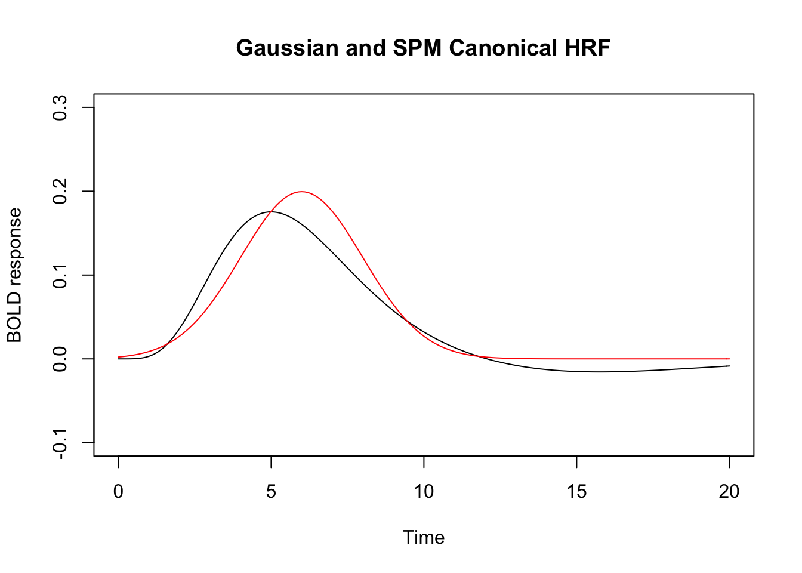
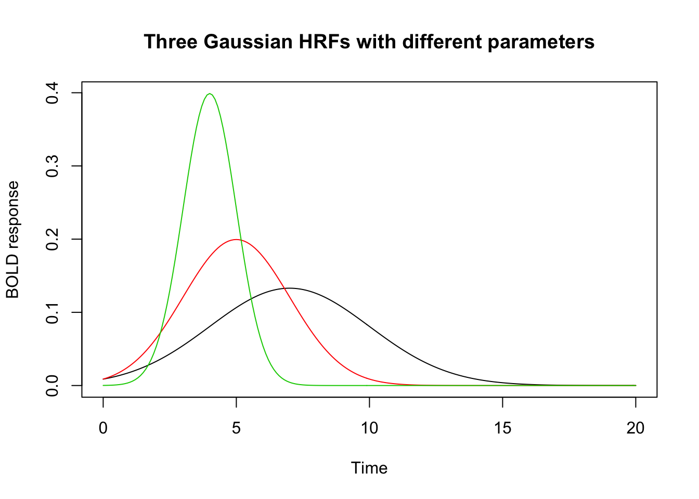

Hemodynamic Response Functions
Bradley R. Buchsbaum
2017-11-12
Hemodynamic response function
A hemodynamic response function (HRF) is used to model the temporal evoluation of an fMRI response to an experimental “event”. An HRF is a function of time and peaks 4-6s afer the event onset.
There are a number of pre-defined HRFs in fmrireg that make it easy to work with them. For example, we can use the SPM “canonical” HRF as follows:
## Loading fmrireg## It is recommended to use 'given' instead of 'middle'.## Loading required package: abindlibrary(magrittr)
## SPM canonical hrf
vals <- evaluate(HRF_SPMG1, seq(0,20,by=.1))
## Gaussian hrf with default parameters (mean=6, sd=1.5)
vals2 <- evaluate(HRF_GAUSSIAN, seq(0,20,by=.1))
plot(seq(0,20,by=.1), vals, type="l", xlab="Time", ylab="BOLD response", ylim=range(c(vals, vals2)), main="Gaussian and SPM Canonical HRF")
lines(seq(0,20,by=.1), vals2, type="l", col=2)
Changing Default Parameters
## the 'HRF' constructor take a function and returns instantiates and HRF object. Several 'hrf' functions are provided which have default parameters.
## the 'gen_hrf' function take an function and returns a new function substituting the supplied parameters as arguments.
hrf_7_3 <- gen_hrf(hrf_gaussian, mean=7, sd=3)
hrf_5_2 <- gen_hrf(hrf_gaussian, mean=5, sd=2)
hrf_4_1 <- gen_hrf(hrf_gaussian, mean=4, sd=1)
hrf1 <- HRF(hrf_7_3, name="hrf_gaussian_7_3")
hrf2 <- HRF(hrf_5_2, name="hrf_gaussian_5_2")
hrf3 <- HRF(hrf_4_1, name="hrf_gaussian_4_1")
vals1 <- evaluate(hrf1, seq(0,20,by=.1))
vals2 <- evaluate(hrf2, seq(0,20,by=.1))
vals3 <- evaluate(hrf3, seq(0,20,by=.1))
## notice that that each function is scaled so that it's highest value = 1.
plot(seq(0,20,by=.1), vals1, type="l", xlab="Time", ylab="BOLD response", ylim=range(c(vals1, vals2, vals3)), main="Three Gaussian HRFs")
lines(seq(0,20,by=.1), vals2, type="l", col=2)
lines(seq(0,20,by=.1), vals3, type="l", col=3)
Multivariate HRF: B-splines and Derivatives
Sometimes we want to model an event with multiple “basis functions”. In this case the HRF is a function from time -> d-dimensional vector, where d is the dimension of the basis set.
## A third degree B-Spline with four bases.
hrf_bs_4 <- HRF(gen_hrf(hrf_bspline, N=4), name="hrf_bspline_4")
time <- seq(0,20, by=.1)
bmat1 <- evaluate(hrf_bs_4, time)
matplot(time, bmat1, xlab="Time", ylab="BOLD Response", type='l', main="Bspline HRF basis set (N=4)")
## A first degree B-Spline with 12 bases.
hrf_bs_12 <- HRF(gen_hrf(hrf_bspline, degree=1, N=12), name="hrf_bspline_12")
time <- seq(0,20, by=.1)
bmat1 <- evaluate(hrf_bs_12, time)
matplot(time, bmat1, xlab="Time", ylab="BOLD Response", type='l', main="Bspline HRF basis set (N=12)")
## the SPM + first derivative is a "built-in" HRF function.
time <- seq(0,20, by=.1)
bmat1 <- evaluate(HRF_SPMG2, time)
matplot(time, bmat1, xlab="Time", ylab="BOLD Response", type='l', main="SPM + first derivative")
## the SPM + first derivative + second derivative is a "built-in" HRF function.
time <- seq(0,20, by=.1)
bmat1 <- evaluate(HRF_SPMG3, time)
matplot(bmat1, xlab="Time", ylab="BOLD Response", type='l', main="SPM + 1st and 2nd derivative")
Creating “lagged” and “blocked” HRFs
In some cases, it might be useful to create an HRF function that has a temporal offset (a “lag” or “delay”). We might also want to create an HRF that has a fixed width or duration that is larger than zero. Below are examples of suched lagged and blocked HRFs.
## constructing a series of lagged HRFs
hrf_lag_1 <- hrf_gaussian %>% gen_hrf_lagged(1) %>% HRF(name="hrf_lagged_1")
hrf_lag_3 <- hrf_gaussian %>% gen_hrf_lagged(3) %>% HRF(name="hrf_lagged_3")
hrf_lag_5 <- hrf_gaussian %>% gen_hrf_lagged(5) %>% HRF(name="hrf_lagged_5")
time <- seq(0,22,by=.2)
plot(time, evaluate(hrf_lag_1,time), type='l', xlab="time", ylab="BOLD")
lines(time, evaluate(hrf_lag_3,time), col=2)
lines(time, evaluate(hrf_lag_5,time), col=3)
## constructing blocked HRFs
hrf_block_1 <- hrf_gaussian %>% gen_hrf_blocked(width=1) %>% HRF(name="hrf_blocked_1")
hrf_block_3 <- hrf_gaussian %>% gen_hrf_blocked(width=3) %>% HRF(name="hrf_blocked_3")
hrf_block_5 <- hrf_gaussian %>% gen_hrf_blocked(width=5) %>% HRF(name="hrf_blocked_5")
plot(time, evaluate(hrf_block_1,time), type='l', xlab="time", ylab="BOLD")
lines(time, evaluate(hrf_block_3,time), col=2)
lines(time, evaluate(hrf_block_5,time), col=3)